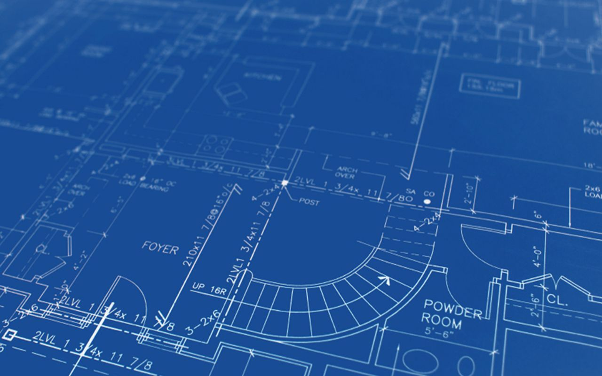

Why are blueprints blue?

Key Takeaways
The distinctive blue color of blueprints comes from a chemical process involving Prussian blue, a color accidentally discovered in 1704 in Berlin when an alchemist and a dye-maker's experiment with potash and iron sulfate resulted in a vivid blue dye.
Prussian blue, originally named Berlin blue, became popular for its durability and intensity.
Although John Herschel is credited with using Prussian blue in the blueprint process to reproduce architectural drawings inexpensively, it wasn't until after his death that blueprints became widely recognized for their practicality in engineering and architecture.
If you have a blueprint for success, you're not alone. At least when it comes to the "blueprint" part. The word "blueprint" has become part of a global lexicon used to symbolize a plan, strategy or framework. But what is a blueprint, really?
At its most basic, a blueprint is a reproduction of an image that already exists. Engineers or architects use these large-format prints to illustrate project plans using white lines and text on a backdrop of blue. And it's not just because they happen to really, really like blue.
A blueprint's signature hue is tied to a chemical process. In 1842, an English photographer, chemist and astronomer named John Herschel discovered that combining ferric ammonium citrate and potassium ferricyanide created a chemical reaction and a compound called blue ferric ferrocyanide (or Prussian blue). This photosensitive solution could be used to reproduce documents in a process similar to developing a photograph from a negative.
The process, called cyanotype, was adopted by early photographers and led to the first book illustrated by photography and then became the darling of architects and engineers. Here's how it works: First, you create a drawing and transfer it to vellum paper or tracing cloth, both of which are so thin they are practically see-through. Then, you saturate a piece of regular paper with an ammonium potassium mixture and let it dry. Place the drawing atop the paper coated in the chemical solution, expose the papers to a bright light and wait for a chemical reaction to take place. Within a matter of minutes, the chemical-coated paper will be transformed into blue ferric ferrocyanide -- with one important exception.
Wherever the light can't shine through the top paper (because of the lines from the original drawing), the blueprinting paper remains white. After rinsing the paper in cold water to halt the chemical reaction and allowing the paper to dry in the dark, you're left with a nearly identical duplicate of the original drawing. The reproduction is a negative image that appears white against a background turned a specific shade of indigo by the reaction of the chemical compound. Although the process requires several steps, it became a big hit with the pre-computer crowd of the 19th and 20th centuries; it was still faster and cheaper than creating large-scale drawings by hand [sources: Pendle, Soniak].
Who Put the 'Blue' in Blueprint?
The story of the creation of Prussian blue has all the elements of a dark fairy tale. In 1704, an alchemist and a dye-maker shared a laboratory in Berlin, Germany. The former, Johann Konrad Dippel, sought to create a universal remedy -- one that treated everything from animal mange to human epilepsy -- by boiling hooves, horns and leather into a smelly elixir. The latter, a fellow named Diesbach, made batches of vibrant dyes. One day, as Diesbach simmered insects, alum, iron and sulfate to create a deep red, he added some potash borrowed from the alchemist's elixir and added it to his viscous mixture. This horrible brew created a blue as deep as the night sky.
After retracing the steps in the process, Dippel realized the potash contained ox blood that when mixed with iron sulfate caused a chemical reaction and turned a brilliant shade of blue. Unlike other blue dyes that were difficult to make and easily faded, this blue remained vivid.
Initially, Dippel called the color Berlin blue as a nod to his city of residence. Later, it was called Prussian blue because it was used to dye uniform fabric for the Prussian army. The color became both a symbol of aggression and a term of endearment because of the army's fierce battles and serendipitous interventions in conflicts like the Battle of Waterloo.
By the late 1800s, Prussian blue had found favor with Impressionist artists and Japanese printmakers. As the 1900s wore on, it became the hue of newspaper ink, typewriter ribbon and eye shadow. Scientists even discovered Prussian blue works as an antidote to heavy metal poisoning by acting as a magnet to attract and evacuate heavy metals from the bloodstream [source: Pendle].
Eventually, Prussian blue became as important for its practicality as its novelty, but not while John Herschel was alive to see it. It wasn't until five years of his death that blueprints were recognized as an inexpensive and simple way to reproduce architectural drawings [source: Granaham].